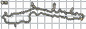

The Night Bite
Hoover Reservoir Fishing Hub
Personal, unofficial Hoover Reservoir hub (Delaware / Franklin County, Ohio) — species pages, water maps, trip log, and gear kits.
Today’s pool & temp
891.50 ft · 65°F · ~2.5 ft below full pool

How to read this
- Pool is lake surface elevation (ft NGVD29) — not the depth of any hole or channel.
- The ODNR contour map is drawn at 894 ft. Contours are off by about (894 − pool) — if pool is lower, real water is shallower than printed.
- Temp is gauge water ~2 ft down (°F in the lead; °C here for reference) — not air temp, and not every creek arm.
- USGS values are provisional (params 62614 pool / 00010 temp) and can be revised. USGS-03228400.
- Hoover is a 10 HP / idle-speed drinking-water reservoir — keep wakes down and pack out trash.
Water / maps
ODNR contours @ 894, city ramp map, USGS gauge, pool correction.
Species
Cats, bass, panfish, saugeye — season, where, limits, gear.
Play Whisperwood
Cozy pixel fishing game — fiction, not the real lake.
Latest log
What this site is
- Unofficial Hoover-only fishing hub with night-dock atmosphere
- Species pages with limit reminders — verify HuntFish OH / ODNR 2026–27
- One example log entry, marked Example · not ODNR / City / USGS
Night fishing can be dangerous in storms, heat, and low visibility. Wear a life jacket when it calls for it.
10 hp · drinking-water reservoir · license ages 16+. See About.